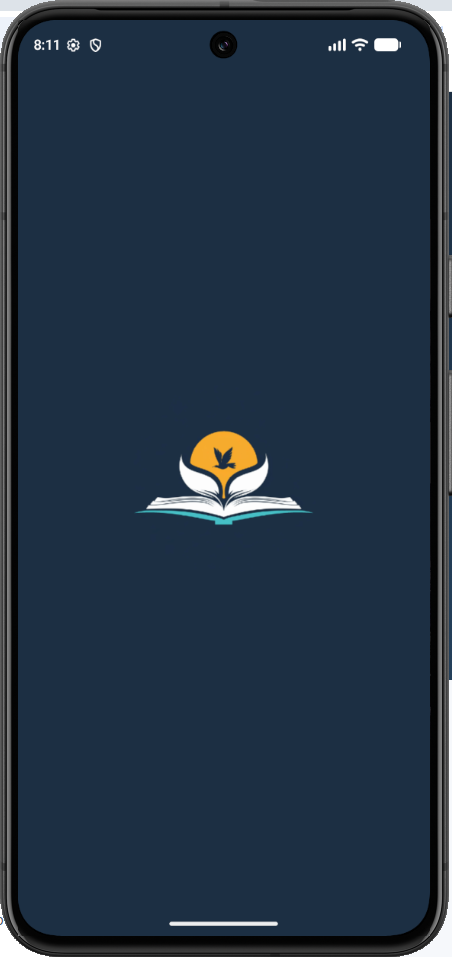
1
Start the app
Calibre Touch opens with its splash screen while it loads.
A step-by-step guide to setting up Calibre Touch and finding your way around your library.
The first time you open Calibre Touch, a short setup guides you through choosing where your books are kept.

Calibre Touch opens with its splash screen while it loads.
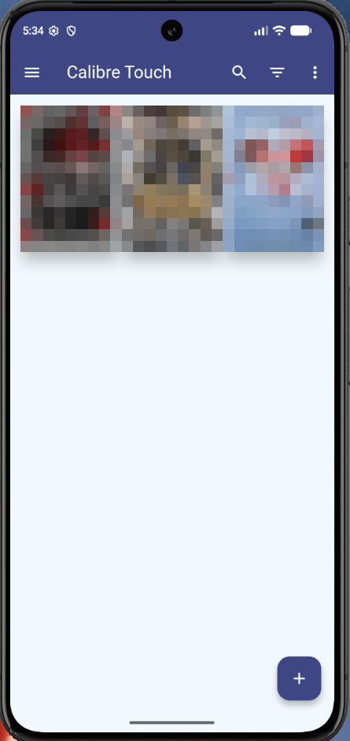
The welcome screen introduces the app. Tap Next to continue. You can also tap the dots at the bottom to move between setup pages.
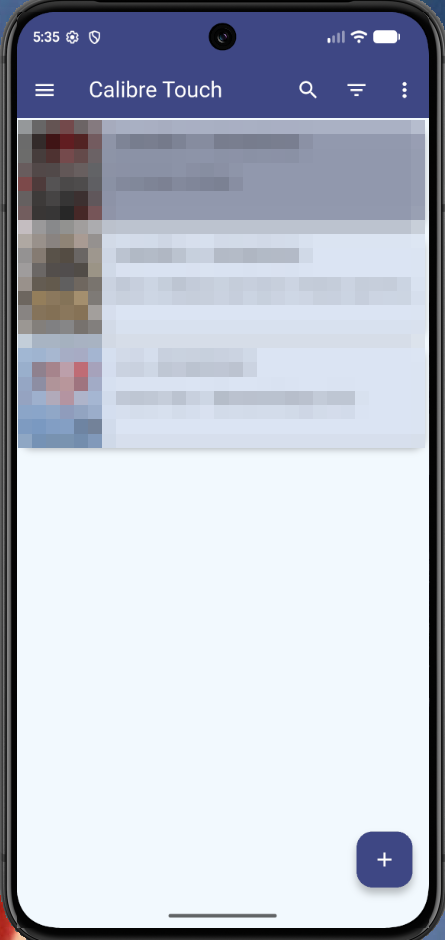
Calibre Touch shows the folder it will use for your library.
Don't put the library on a network drive or in a cloud-synced folder (OneDrive, Google Drive, Dropbox…): that is not safe and can corrupt it.
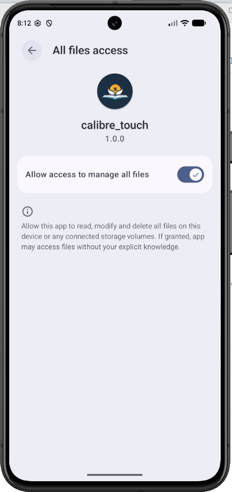
If you choose your own folder, Android asks for file access. Switch on Allow access to manage all files, then go back to the app with the back arrow.
Calibre Touch only uses this permission to list, search and open your books. See the privacy policy.
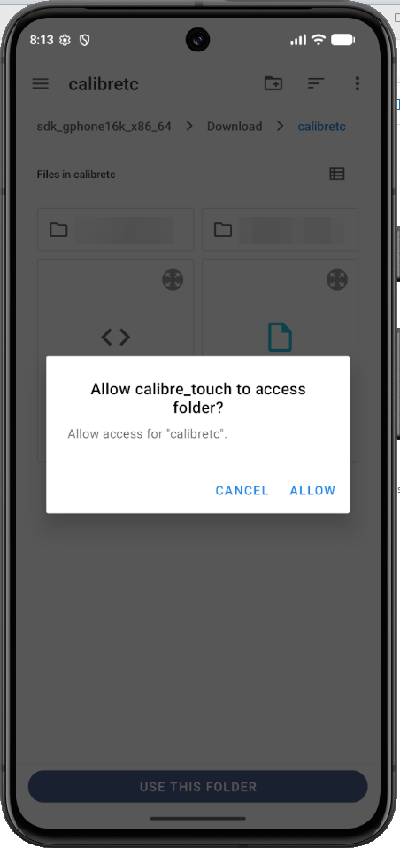
Browse to the folder that holds your books and tap Use this folder. When Android asks whether to allow access to the folder, tap Allow.
Tap Get Started to open your library. You can change these choices later in Settings.
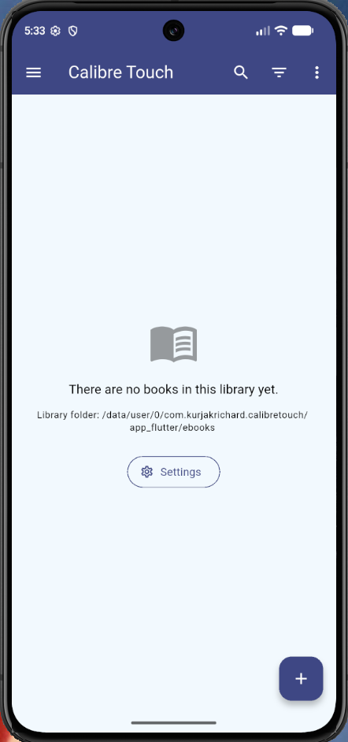
A new library is empty. Tap + in the bottom-right corner to add a book file (EPUB, MOBI, AZW3, FB2, PDF, DOCX, ODT, RTF, TXT and more). You can also open a book file with Calibre Touch from another app, or share it to Calibre Touch.

Tap the search icon at the top of the screen, type words from the title, author, series, tags or description, then press Enter or tap the search icon in the field. Accents don't matter, so "tuz" also finds "tűz".
Tap ✕ to clear the search and show all your books again.
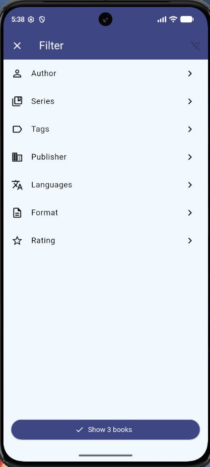
Tap the filter icon at the top of the screen (the badge shows how many values are picked) and choose a category: author, series, tags, publisher, languages, format or rating. Tick the values you want; long lists have a search field.
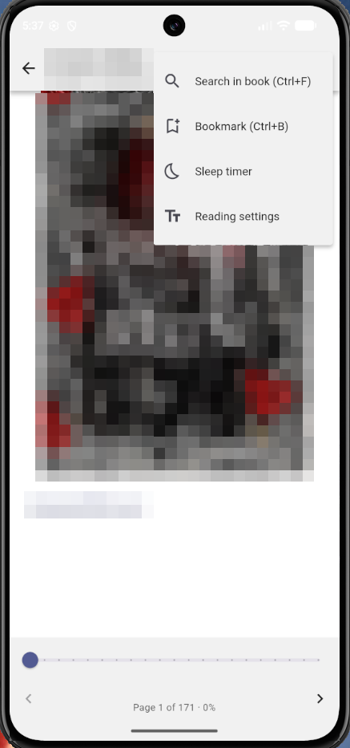
Tap the ⋮ menu, then Sort by, and choose date added, title, author, series, rating, published or last modified, ascending or descending. The order is used in every view and is remembered. Title and author follow Calibre's sort order (for example "The Hobbit" sorts under H).
Choose how your library is shown: as covers, as a list, or as a table.
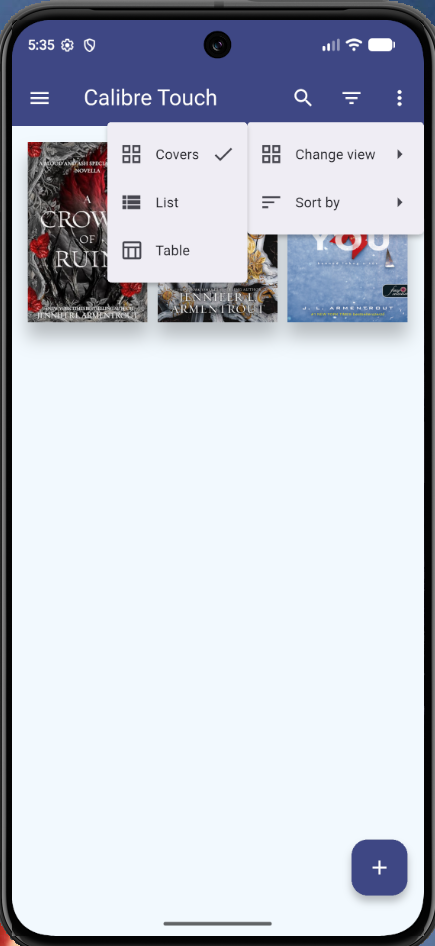
Tap the ⋮ menu in the top-right corner, then Change view, and choose Covers, List or Table. The current view has a check mark.
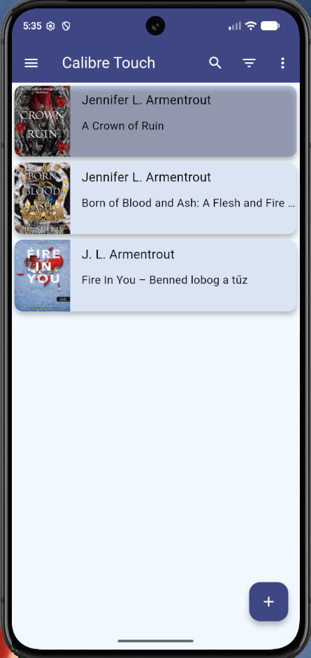
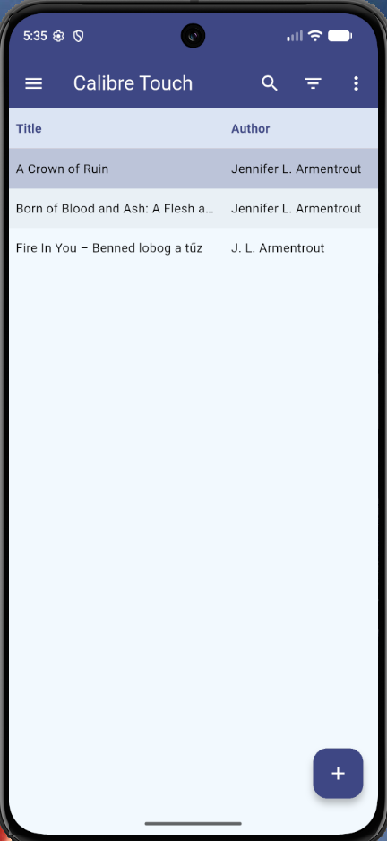
A thin bar on a cover (and a percentage in the list and table) shows how far you have read the book; a green check mark shows a book you have logged as finished.
Tap Read on a book to open it in the built-in reader. Tap the middle of the page to show or hide the bars.
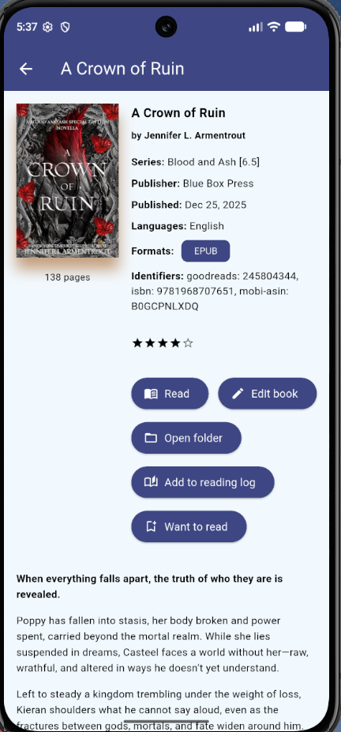
Tap a book to see its details: series, publisher, publication date, languages, formats, identifiers, rating, page count and description. Tap a format to open the book in that format.
Scroll the text, or swipe left and right to turn a page. On a computer use the arrow keys, Page Up / Page Down or Space. Pull past the end of a chapter to go on to the next one. The slider at the bottom moves between chapters and shows the page number and percentage.
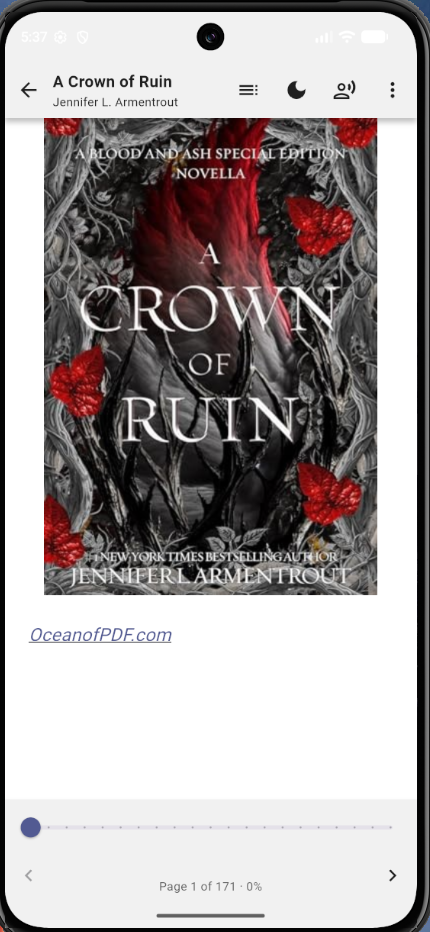
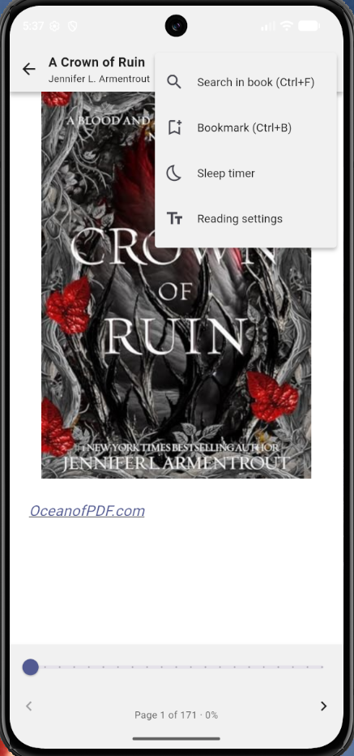
Tap ⋮ for Search in book (Ctrl+F), Bookmark (Ctrl+B), the Sleep timer and the Reading settings.
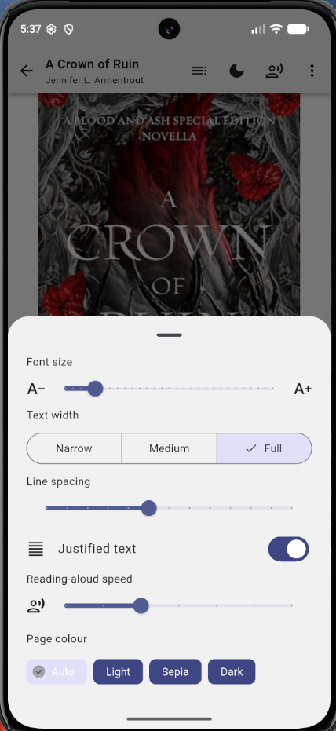
In ⋮ → Reading settings you can set the font size, the text width (narrow, medium or full), line spacing, justified text, the reading-aloud speed and the page colour (automatic, light, sepia or dark).
⋮ → Search in book (Ctrl+F) opens the search panel. Type a word or phrase and press Enter. Every match is listed with its chapter and page, and marked in the text. The bar at the top steps through the matches (F3 / Shift+F3 on a computer); tap ✕ to end the search. Tick Ignore accents to find "kor" in "kör" and "kór" too.
PDF books open in a page viewer. Zoom with two fingers or double-tap. Bookmarks work per page and can have a note; searching marks the matches on the pages.
Tap the read aloud icon in the top bar. Reading starts at the top of the screen, follows the text and marks the paragraph being read. To start somewhere else, press and hold a paragraph and choose Read aloud from here. The voice and its language come from your device's text-to-speech settings.
On Android, reading goes on with the screen locked or in another app. The notification and the lock screen show the book with buttons for the previous and next paragraph, pause and stop.
⋮ → Sleep timer stops reading after 5 to 60 minutes, or at the end of the chapter. The minutes left show on the read-aloud icon.
The reading log keeps the books you have read and want to read, and measures how much you read. It is stored only on your device and can be turned off in Settings.
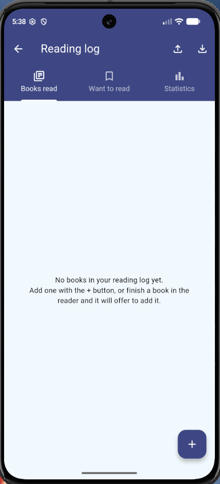
The Statistics tab shows the books, pages and reading time of each year, books per month and year, the last 30 days, your reading streak and your most read authors.
Set a daily reading goal at the top of the tab. The circle shows today's minutes, the dots show the last seven days, and the reader tells you when you reach the goal.
Export your log as a Goodreads CSV file, which Goodreads, StoryGraph, Bookstry and others can import, and import such files back. Books are matched with your library by ISBN or by title and author.
Tap Edit book on a book's details page. Changes are saved with Save, into the Calibre library and the book's metadata.opf.
Take the cover from a picture file, a photo (on phones) or the book file itself, crop it, resize it, generate a simple cover from the title and author, or remove it. The size of the cover is shown under its title.
Press and hold a book and choose Select (or Ctrl+click on a computer). While books are selected, tapping a book selects or deselects it. The top bar shows how many are selected, and lets you select all books shown or end the selection.
Tap Edit together to add or remove tags, set or remove the series (optionally numbering the books in the order shown), set or remove the publisher, set the languages or change the rating. Fields left empty change nothing. Title and author are changed book by book.
Duplicates in the side menu lists books that are probably the same: the same ISBN (when the books also share an author or title words), the same title and author, or a one-volume edition next to its separate volumes. Different volumes, series and languages are not counted as duplicates.
Open or delete each book from its ⋮ menu, or mark a group as Not duplicates to hide it.
Write to kurjak.richard@gmail.com and describe what you're trying to do.